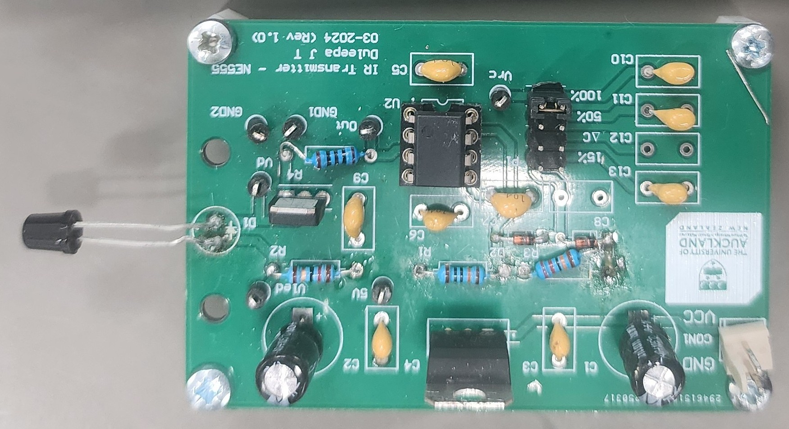
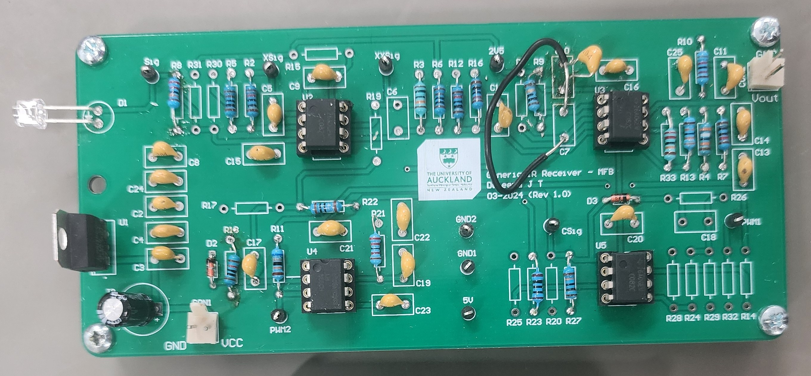

Capacitive Water Level Monitoring System
This project involved the design and implementation of a capacitive water level monitoring system intended for remote agricultural water tanks. The system measured water level using a capacitive probe and transmitted the measurement using an infrared communication link before converting it back into a calibrated voltage output.
The project was completed as part of ELECTENG 310, where I acted as team lead throughout the design, testing, and documentation phases. The final prototype operated successfully and achieved the highest report grade in the cohort, receiving 14.5/15.


System Overview
The system was divided into three major subsystems:
Capacitive Probe
The probe measured water level by exploiting the change in capacitance that occurs as water surrounds the sensing element. Different dielectric materials and probe configurations were investigated to determine their effect on sensitivity, durability, and long-term reliability.
Infrared Transmitter
The transmitter converted the measured capacitance into a frequency-modulated signal and drove an infrared LED. This allowed the water level information to be transmitted optically between subsystems without a direct electrical connection.
Infrared Receiver
The receiver detected the infrared signal using a photodiode and converted it back into a voltage proportional to water level. This required amplification, filtering, pulse conditioning, and frequency-to-voltage conversion before the signal was calibrated to the required output range.
Key Design Decisions
Probe Material Selection
A key design decision involved selecting the dielectric material used in the capacitive probe. Different materials were evaluated based on sensitivity, durability, water resistance, manufacturability, and suitability for long-term deployment in agricultural environments.
Simulation and analysis were used to compare candidate materials and determine their impact on capacitance variation and overall sensor performance. The final selection balanced measurement sensitivity with practical considerations such as cost and environmental robustness.
Frequency Modulation
Several methods of encoding the sensor measurement were considered. A frequency-modulated approach was ultimately selected, allowing the measured capacitance to be represented as a change in signal frequency that could be transmitted through the infrared communication link and recovered by the receiver circuitry.
Cost and Scalability
Component selection considered both performance and suitability for large-scale deployment. Cost, availability, reliability, and ease of implementation were evaluated alongside electrical performance throughout the design process.
Development and Debugging
Like most engineering projects, a significant amount of development time was spent diagnosing unexpected behaviour and refining the design.
On the transmitter side, the visible red LED used for initial testing was replaced with an infrared LED partway through development. It was assumed that the device pinout remained the same, however the infrared component used the opposite polarity convention, so the LED was installed backwards and produced no optical output until the mistake was identified and corrected. Later, range testing introduced a further complication: to investigate whether reducing the duty cycle and increasing drive current would extend effective range, the resistors controlling the duty cycle were desoldered so different values could be trialled. Repeated desoldering damaged the copper pads around those component holes, breaking their connection to the underlying track. Rather than attempting to repair the damaged pads directly, a resistor was instead soldered to an adjacent through-hole known to share the same electrical node, restoring the connection via a short jumper and allowing testing to continue without replacing the board.
The receiver stage had its own share of issues. Early on, rather than detecting the transmitted signal, the photodiode circuit produced a near-constant DC output. Investigation revealed that the photodiode's equivalent capacitance, combined with the selected sensing resistor, unintentionally formed a low-pass filter that attenuated the desired signal; adjusting the component values resolved the problem and restored signal detection. Further tuning was later required in the receiver's 555 timer circuitry, while the design functioned as expected in simulation, the physical device required longer trigger pulses to reliably recognise incoming signals, and adjusting the pulse timing significantly improved system stability.
The final signal-conditioning stage also required refinement. Initial component values were calculated using simulation results, however measurements taken from the completed hardware differed from the simulated outputs. Recalculating the circuit using measured values produced a much more accurate calibration within the required output range.
One particularly interesting issue arose while reviewing the supplied PCB documentation. The documented amplifier configuration appeared incapable of producing the required signal inversion needed by the design. After discussing the problem with tutors and analysing the circuit behaviour, it was discovered that an incorrect PCB file had been distributed. The correct design used a Multiple Feedback (MFB) filter stage rather than the amplifier shown in the original documentation. Following the discovery, the correct files were distributed to the class and implementation proceeded successfully.
Results
The completed prototype successfully measured water level and transmitted the measurement through an infrared communication link.
Project outcomes included:
- Fully functional prototype
- Successful integration of sensing, transmission, and receiver subsystems
- LTSpice simulation validated through hardware testing
- Highest report grade in the cohort (14.5/15)
- Practical experience in analogue electronics, signal conditioning, optical communication, and system debugging
My Contributions
As team lead, I coordinated project activities, technical discussions, and report development throughout the project.
My primary technical contributions included:
- Designing the frequency-to-voltage conversion (pulse width generation) stage used to recover water level information from the transmitted signal.
- Designing and calculating component values for the Multiple Feedback (MFB) filter used for signal conditioning and output calibration.
- Performing component power analysis and device selection to ensure safe operation of the transmitter circuitry while optimising transmitted power.
- Diagnosing and resolving several critical issues that prevented system operation, including photodiode signal detection problems, infrared LED polarity errors, 555 timer timing issues, and receiver calibration errors.
- Identifying an inconsistency between the supplied PCB documentation and the required circuit behaviour, which led to the discovery that an incorrect PCB file had been distributed to the class.
Additional Resources
For readers interested in the complete technical design process, calculations, simulations, and testing methodology, the full project report and source files are available below.
View Full ReportView Full Specification Sheet